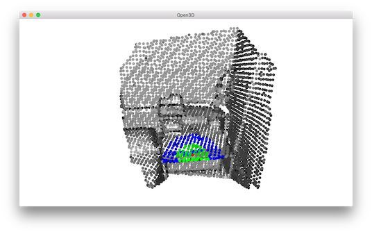

KDTree¶
Open3D uses FLANN to build KDTrees for fast retrieval of nearest neighbors.
5 6 7 8 9 10 11 12 13 14 15 16 17 18 19 20 21 22 23 24 25 26 27 28 29 30 31 | # examples/Python/Basic/kdtree.py
import numpy as np
import open3d as o3d
if __name__ == "__main__":
print("Testing kdtree in open3d ...")
print("Load a point cloud and paint it gray.")
pcd = o3d.io.read_point_cloud("../../TestData/Feature/cloud_bin_0.pcd")
pcd.paint_uniform_color([0.5, 0.5, 0.5])
pcd_tree = o3d.geometry.KDTreeFlann(pcd)
print("Paint the 1500th point red.")
pcd.colors[1500] = [1, 0, 0]
print("Find its 200 nearest neighbors, paint blue.")
[k, idx, _] = pcd_tree.search_knn_vector_3d(pcd.points[1500], 200)
np.asarray(pcd.colors)[idx[1:], :] = [0, 0, 1]
print("Find its neighbors with distance less than 0.2, paint green.")
[k, idx, _] = pcd_tree.search_radius_vector_3d(pcd.points[1500], 0.2)
np.asarray(pcd.colors)[idx[1:], :] = [0, 1, 0]
print("Visualize the point cloud.")
o3d.visualization.draw_geometries([pcd])
print("")
|
Build KDTree from point cloud¶
12 13 14 15 16 | print("Testing kdtree in open3d ...")
print("Load a point cloud and paint it gray.")
pcd = o3d.io.read_point_cloud("../../TestData/Feature/cloud_bin_0.pcd")
pcd.paint_uniform_color([0.5, 0.5, 0.5])
pcd_tree = o3d.geometry.KDTreeFlann(pcd)
|
This script reads a point cloud and builds a KDTree. This is a preprocessing step for the following nearest neighbor queries.
Find neighboring points¶
19 20 | print("Paint the 1500th point red.")
pcd.colors[1500] = [1, 0, 0]
|
We pick the 1500-th point as the anchor point and paint it red.
Using search_knn_vector_3d¶
22 23 24 | print("Find its 200 nearest neighbors, paint blue.")
[k, idx, _] = pcd_tree.search_knn_vector_3d(pcd.points[1500], 200)
np.asarray(pcd.colors)[idx[1:], :] = [0, 0, 1]
|
Function search_knn_vector_3d returns a list of indices of the k nearest neighbors of the anchor point. These neighboring points are painted with blue color. Note that we convert pcd.colors to a numpy array to make batch access to the point colors, and broadcast a blue color [0, 0, 1] to all the selected points. We skip the first index since it is the anchor point itself.
Using search_radius_vector_3d¶
26 27 28 | print("Find its neighbors with distance less than 0.2, paint green.")
[k, idx, _] = pcd_tree.search_radius_vector_3d(pcd.points[1500], 0.2)
np.asarray(pcd.colors)[idx[1:], :] = [0, 1, 0]
|
Similarly, we can use search_radius_vector_3d to query all points with distances to the anchor point less than a given radius. We paint these points with green color.
30 31 32 | print("Visualize the point cloud.")
o3d.visualization.draw_geometries([pcd])
print("")
|
The visualization looks like:
{kind=link}
Note
Besides the KNN search search_knn_vector_3d and the RNN search search_radius_vector_3d, Open3D provides a hybrid search function search_hybrid_vector_3d. It returns at most k nearest neighbors that have distances to the anchor point less than a given radius. This function combines the criteria of KNN search and RNN search. It is known as RKNN search in some literatures. It has performance benefits in many practical cases, and is heavily used in a number of Open3D functions.